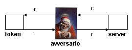

Torna alla pagina di Sicurezza & Privatezza
:: Appello d'esame di Sicurezza e Privatezza - 13/07/2006 ::
Domande
Rispondere brevemente ma in modo completo alle seguenti domande.
- Dire cosa si intende per segretezza, integrità e disponibilità.
- Dire cosa si intende per salami attack e fornire un esempio.
- Descrivere a cosa serve la signature di un virus.
- Nell’ambito delle tecniche di autenticazione, descrivere il meccanismo di challenge response. Si richiede inoltre di descrivere l’attacco a cui questa tecnica di autenticazione è vulnerabile.
- Nell’ambito delle politiche per il controllo dell’accesso, descrivere le differenze tra ruolo e gruppo.
- Nell’ambito del modello di Biba, descrivere la politica low-water mark per oggetti . Questa politica garantisce l’integrità delle informazioni? Si richiede di giustificare la risposta.
- Nell’ambito del meccanismo di controllo dell’accesso di Apache, descrivere il processo di valutazione delle direttive contenute nei file .htaccess. Si richiede inoltre di fornire un esempio di valutazione.
- Spiegare in sintesi l’attacco SQL injection e quali contromisure possono essere adottate.
SOLUZIONE
1.
- segretezza: si parla di segretezza quando un'informazione viene rilasciata, direttamente o indirettamente solo a utenti autorizzati a riceverla.
La privacy è una specializzazione della segretezza. Se ne parla quando l'informazione fa riferimento a individui e consiste nel diritto dell'individuo di stabilire se, come, quando e a chi l'informazione che lo riguarda può essere rilasciata.
- integrità: si parla di integrità quando le informazioni e le risorse non vengono modificate, cancellate o distrutte in modo non autorizzato o improprio.
Include due aspetti fondamentali: correttezza e fiducia.
- disponibilità: si parla di disponibilità quando non vengono in alcun modo impediti agli utenti gli accessi propri e per i quali hanno l'autorizzazione necessaria.
2.
Il Salami Attack consiste in un insieme di piccoli crimini informatici che uniti danno luogo a crimini significativi. Parte da qualcosa di insignificante che però applicato molte volte porta a qualcosa di significativo.
Esempio: piccole somme di denaro che vengono trasferite su di un conto(quello dell'attaccante ovviamente). Queste somme prese singolarmente sono talmente piccole che non vengono considerate, passano inosservate e possono essere ad esempio quelle calcolate per gli interessi del conto bancario.
Il Salami Attack solitamente è causato dalle correzioni che i programmatori inseriscono nei programmi per correggere gli inevitabili errori di calcolo.
3.
La signature di un virus è una stringa di bit usata per individuare ed identificare un virus in modo univoco. Gli antivirus sfruttano questa stringa di bit che caratterizza un particolare tipo di codice malizioso per trovare tale virus e talvolta eliminarlo.
La signature si basa su tre tipi di pattern:
- di memorizzazione: quando il codice del virus inizia con una sequenza di bit invariante. La parte di codice non deve essere necessariamente all'inizio, ma anche in altre posizioni però sempre nella stessa posizione.
Potrebbe essere anche un programma il cui codice comincia con un'istruzione di jump, saltando subito altrove prima di definire le variabili.
- di esecuzione: legato a ciò che il virus esegue, infatti bisogna osservare il comportamento del virus una volta eseguito, in particolare l'entità e la tipologia di danni provocati.
- di trasmissione: si basa sul presupposto che un virus adotti sempre la stessa metodologia di diffusione.
4.
challenge-response: è una "sfida" tra server e utente basata sul protocollo challenge response handshake e caratterizzata dalle seguenti fasi:
- il server di autenticazione stabilisce una sfida (challenge)
- il token genera la risposta (diversa per ogni sfida)
- l'autenticazione avviene con successo se la risposta è corretta
Il challenge response è resistente contro replay attack passivi, ma vulnerabile rispetto ad attacchi attivi come il man in the middle attack.
In questo scenario l'avversario si dichiara al posto del token nei confronti del server e si mostra come server nei confronti del token, questo gli permette di autenticarsi utilizzando la risposta corretta generata direttamente dal token.
Immagine chiarificatrice:

dove R = response del token al server
C = challenge del server al token
e l'avversario è ovviamente Babbo Natale.
5.
Gruppi e ruoli rappresentano lo stesso concetto, ma sono differenti:
- Gruppi: insieme di utenti(statici). Statici significa che se un utente fa parte del gruppo, allora può sempre eseguire le operazioni concesse, senza dover attivare nessun ruolo. Quindi la definizione di gruppo non rimane invariata, si possono aggiungere altri utenti.
- Ruoli: insieme di privilegi(dinamici). Dinamici significa che i privilegi dipendono dal ruolo che l'utente ha attivato.
6.
Secondo la politica low-water mark per oggetti:
- un soggetto s può leggere un oggetto o se e solo se λ(o)≥ λ(s)
- un soggetto s può scrivere ogni oggetto o, ma dopo l'accesso λ(o) = glb{λ(s) , λ(o)}
Lo svantaggio è che non protegge l'integrità, si limita a segnalare che è stata compromessa.
Questa politica non garantisce l'integrità delle informazioni in quanto controlla solo violazioni di integrità dovute a flussi impropri, mentre l'integrità è un concetto più ampio.
7.
I file .htaccess sono file di testo che contengono le regole di accesso relative alla cartella in cui sono contenuti e possono definire sia autorizzazioni positive che negative.
Data una richiesta di accesso ad un file la valutazione parte dalla directory radice del server; sono valutati tutti i file .htaccess presenti nelle sottodirectory fino ad arrivare a quella che contiene il file.
Esempio:
- richiesta di accesso http://acme.com/Department666/welcome.html
- richiesta di accesso mappata su: /home/myaccount/www/Department666/welcome.html
- file .htaccess:
- /
- /home
- /home/myaccount
- /home/myaccount/www
- /home/myaccount/www/Department666
8.
L'SQL injection è un attacco rivolto alle applicazioni web e coinvolge non solo SQL, ma qualsiasi linguaggio di programmazione e qualsiasi DBMS.
L'attacco consiste nell'inserimento di codice maligno nelle query SQL, sfruttando la mancanza di controlli sui dati da input dell'applicazione web.
L'input può essere trasmesso in tre modi:
- URL (query string)
- form HTML
- cookie costruito su misura
L'attacco provoca:
- manipolazione indesiderata dei dati
- accesso ad aree riservate
- visualizzazione di dati riservati
Esempio:
Abbiamo una variabile $id presa in input dalla query string, teoricamente di tipo intero, ma non validata.
$sql = "SELECT * from articoli WHERE id=$id";
se un attaccante in $id inserisce
$id = 1; DROP table articoli; la query diventerà:
$sql = "SELECT * from articoli WHERE id = 1; DROP table articoli;
che ovviamente provoca la cancellazione della tabella articoli.
Contromisure possibili sono:
- controlli sul tipo di dato: tramite l'utilizzo di alcune funzioni si forza una variabile ad appartenere ad un certo tipo.
- creazione di filtri tramite espressioni regolari: i dati in input vengono descritti da una espressione regolare. Ad esempio controllare che l'input sia formato solo dalle lettere dalla A alla Z.
- eliminazione di caratteri potenzialmente dannosi: si eliminano i caratteri che hanno un significato in un'interrogazione SQL, quindi , ; " '
- escape(\) di caratteri potenzialmente dannosi: il carattere sul quale viene effettuato il quoting (\) viene interpretato letteralmente.
Torna alla pagina di Sicurezza & Privatezza